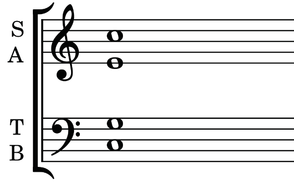
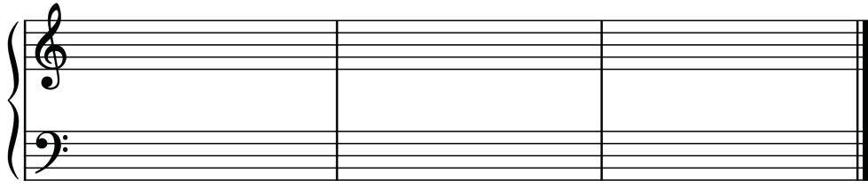
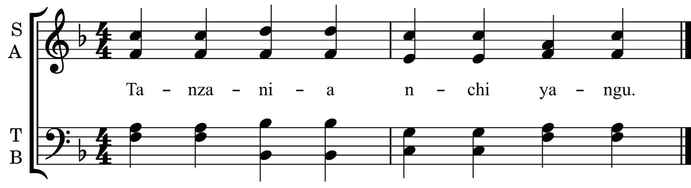
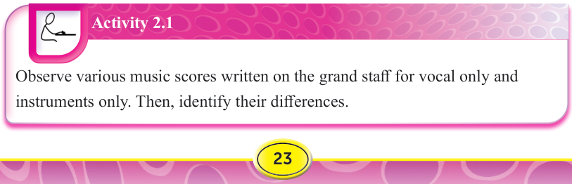

SATBSoprano (S)Alto (A)Tenor (T)Bass (B)
Figure 2.5: The grand staff with four voices
When music for instruments is written on the grand staff, bar lines run straight through both staffs, connecting the treble and bass staffs as shown in Figure 2.6.

Bar linesFigure 2.6: The grand staff connected with bar lines
When music for vocals is written on the grand staff, bar lines do not run across the staff as shown in Figure 2.7.

SATB
Figure 2.7: The grand staff without bar lines that run through both the staffs

Activity 2.1
Observe various music scores written on the grand staff for vocal only and instruments only.
Then, identify their differences.